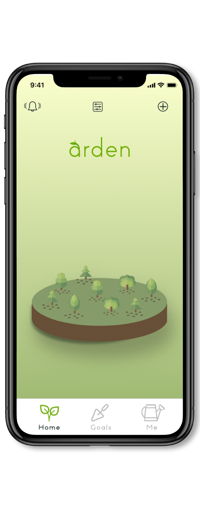

Let's Grow Together
UX/UI Designers:
Elena Marvin, Kylie Nielsen, Mick Rudolph
Tools
Adobe XD, Adobe Illustrator, Miro

UX/UI Designers:
Elena Marvin, Kylie Nielsen, Mick Rudolph
Tools
Adobe XD, Adobe Illustrator, Miro

Never
Rarely
Sometimes
(that means less than a third of our survey participants are tracking their goals always or often üò¨ )
There are a lot of people who don’t have an actual system for tracking their goals beyond remembering in their head.
user interviews
Ashley, User Interviewee

Every day you achieve one of your goals, a plant grows in the user’s “arden.” Different goals grow different plants.
In addition to the user’s personal arden, users can cultivate an arden with friends with group goals. Friends can offer encouragement or give reminders through the app for accomplishing goals.
Goals can be be tracked with helpful stats as well as calendar-day streaks. The user can also log how they are feeling when they accomplish or don’t accomplish their goals.


Users reported that they expected to have a way to communicate with friends that they shared an arden with.
After we implemented the chat feature, the experience still wasn’t seamless.
Once we added the “notifications” page, users reported that they liked being able to see chat messages as well as updates about their arden in the same place.
During guerrilla testing users loved that they could view their goals in calendar view, but were confused why the calendar was in the ‘Me’ tab.
We then made the Calendar view accessible to the users when they were viewing the goal.
Users also requested that they would like to have the ability to see their progress or streaks in calendar mode as well as the groups progress.
(Go ahead, click around)
A quick note on the theme and the name of the app.
We knew from our research interviews that users wanted a visual representation of the progress of their goals. As we discussed as a team how to portray that visual representation, we fell in love with the idea of growing and cultivating a garden. Having a lush, healthy garden takes patience, attention, and consistency.
We decided on the name arden and later discovered that the word “arden” has a Hebrew translation: solidarity and great beauty.
It is remarkably fulfilling to develop technology that helps people be more present in their lives—as opposed to being distracted by technology. To set and achieve personal goals is both a universal ambition and a never-ending challenge. I believe everyone can benefit from using arden.
The app is in its final stages of development. What follows is gathering funding and connections to begin front and back-end development. Of all the projects I’ve worked on, arden is the highest on the priority list to bring to development. More updates to follow.
Thanks for reading,
Mick